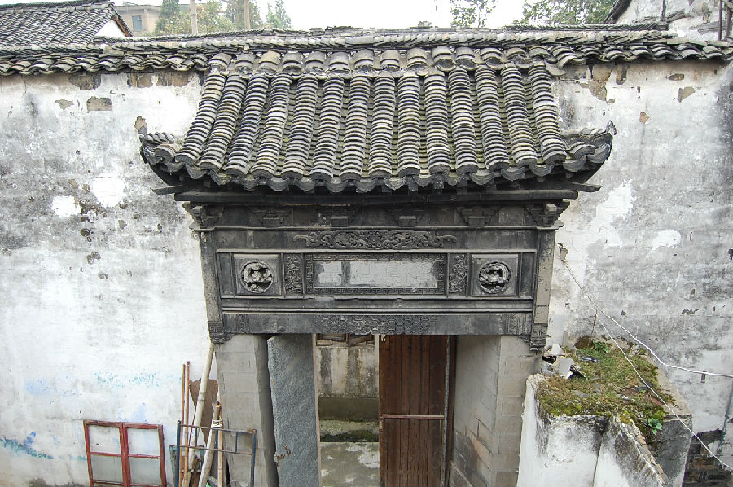

嘉兴市文物保护网 · 市级文物保护点 · 2020-11-03 · 原文

中北大街郑氏老宅建筑群位于浙江省嘉兴市秀洲区新塍镇中北大街90～108号，当地人俗称郑官房。据房主介绍为清乾隆年间初建，民国时期改建，建国后土改分给无房户居住，现存六进，除西边临河一排原先下人住房坐东朝西外，其余房屋坐北朝南，一进二层楼房南临市河，与二进间轿廊、东西侧为厅，西厅又称老厅，乾隆时建，东厅又称新厅，民国时修，与三进间为天井，天井北侧有砖雕门楼，三进当中二层、东西侧为厅，与四进间为天井，四进当中二层、东西侧为厅，与五进间为天井，五进当中二层、东西侧为厅，与六进间为天井，六进当中二层、东西侧为厅，后有院子。建筑规模大，建筑格局保存尚好，门楼、梁架、门窗等处雕工细致，在嘉兴现有的民国时期乡土建筑群中属精品，具有较高的历史价值。2009年公布为嘉兴市文物保护点。